Fotogalerija
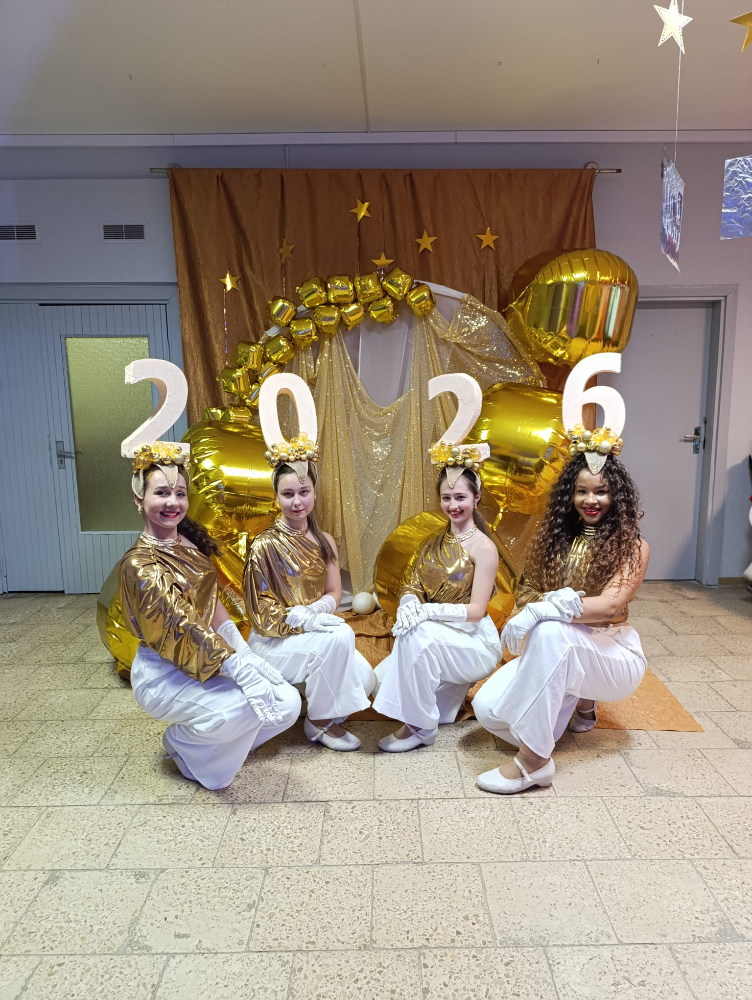
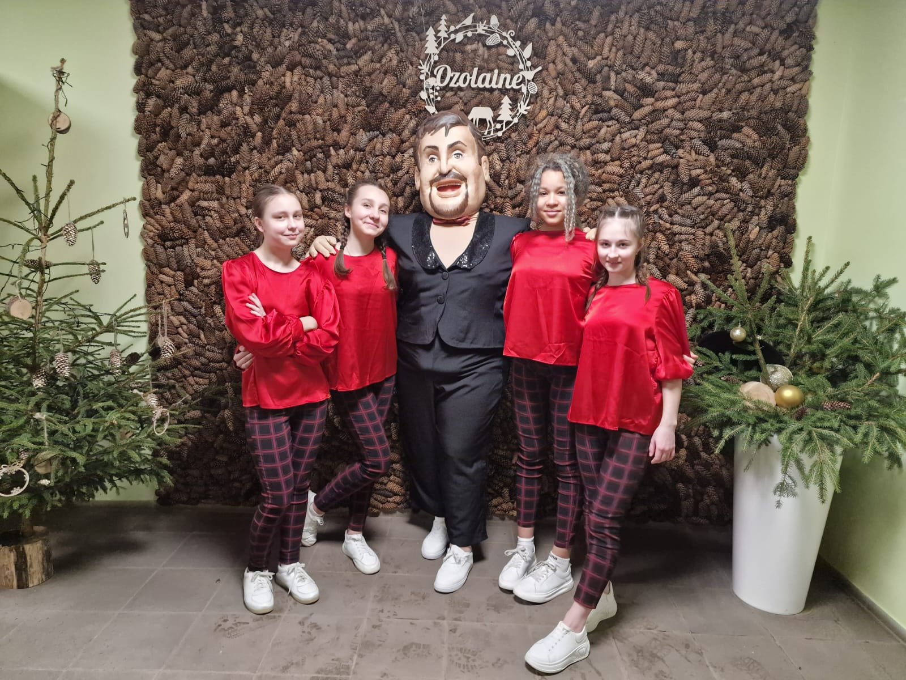
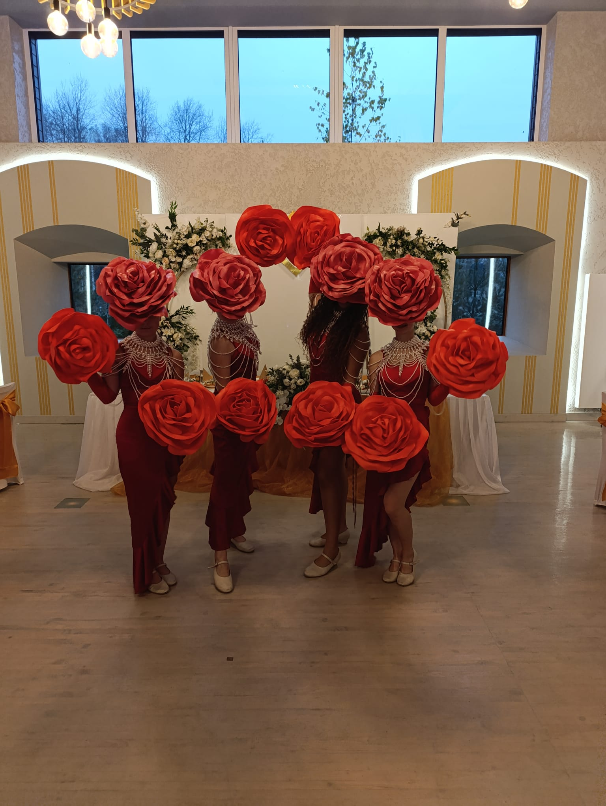
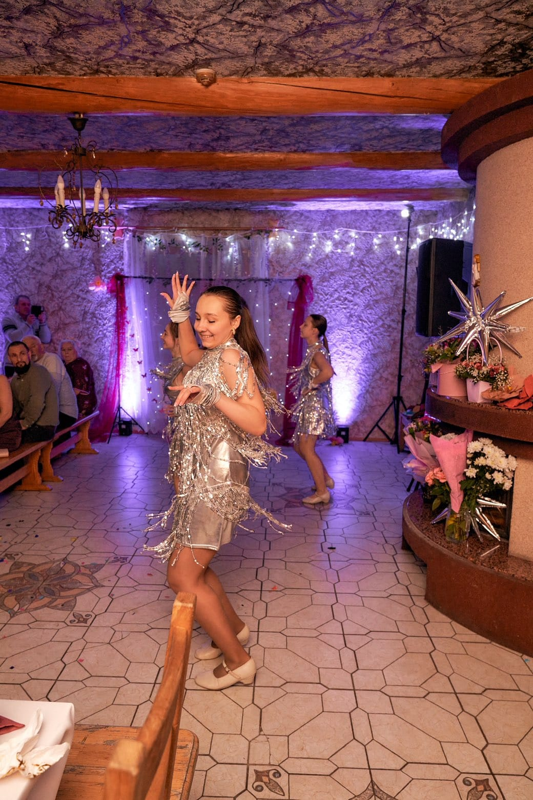
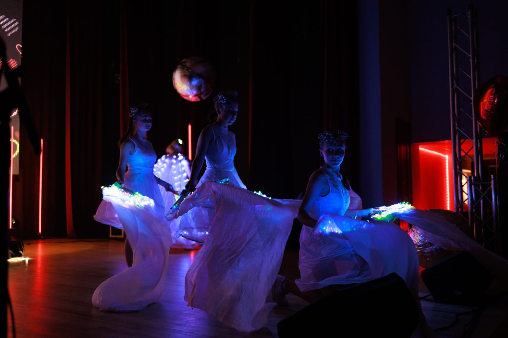
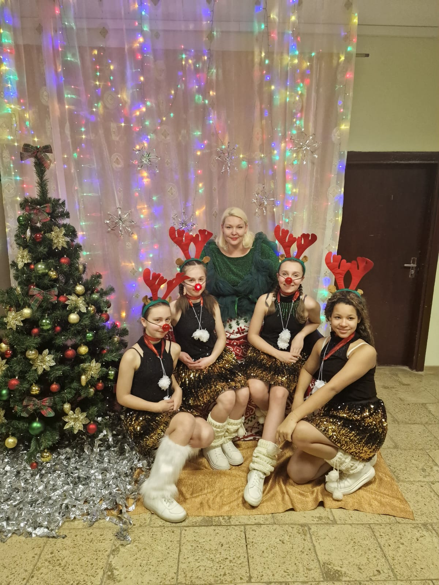
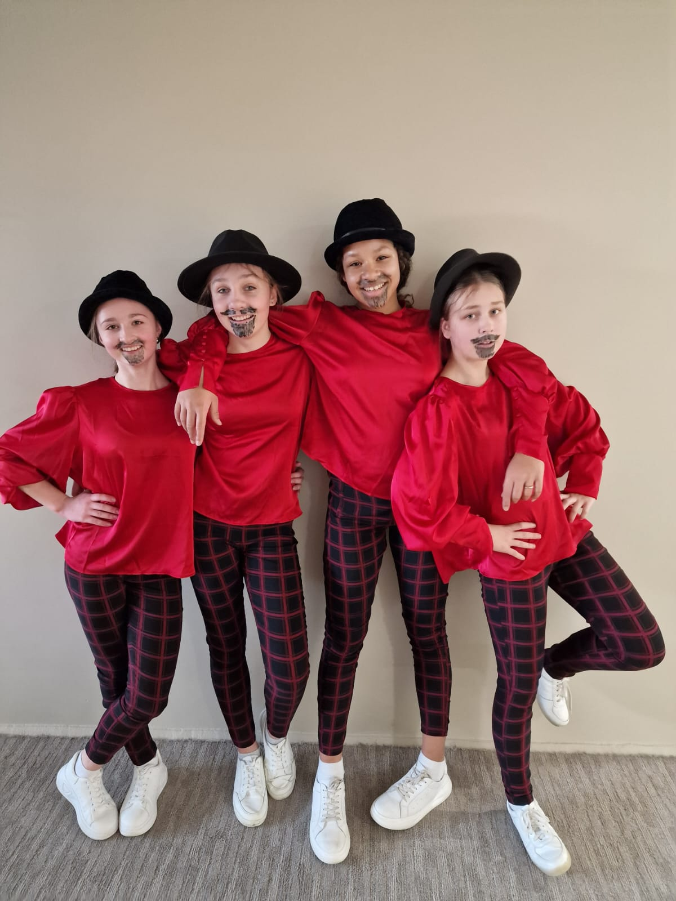
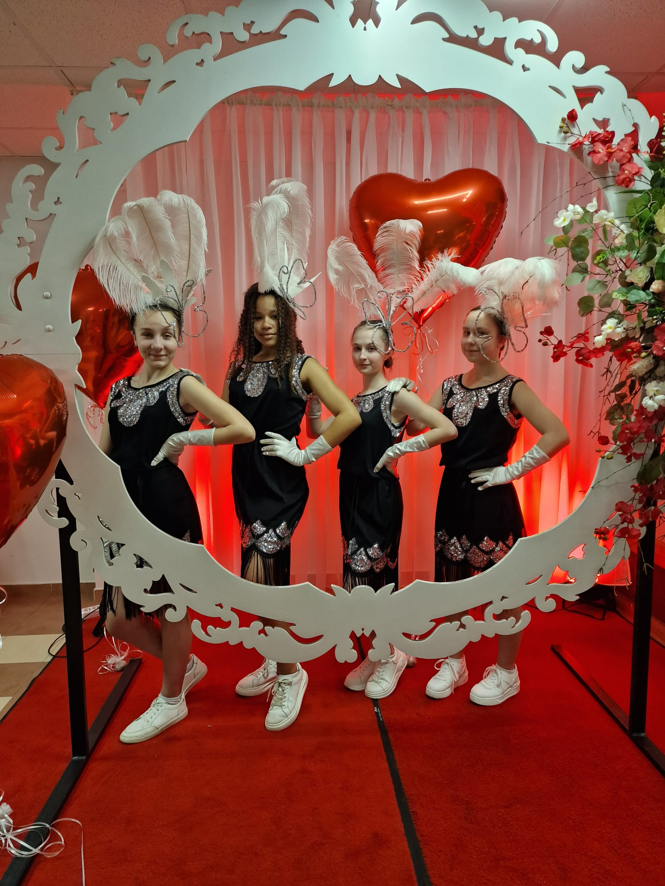
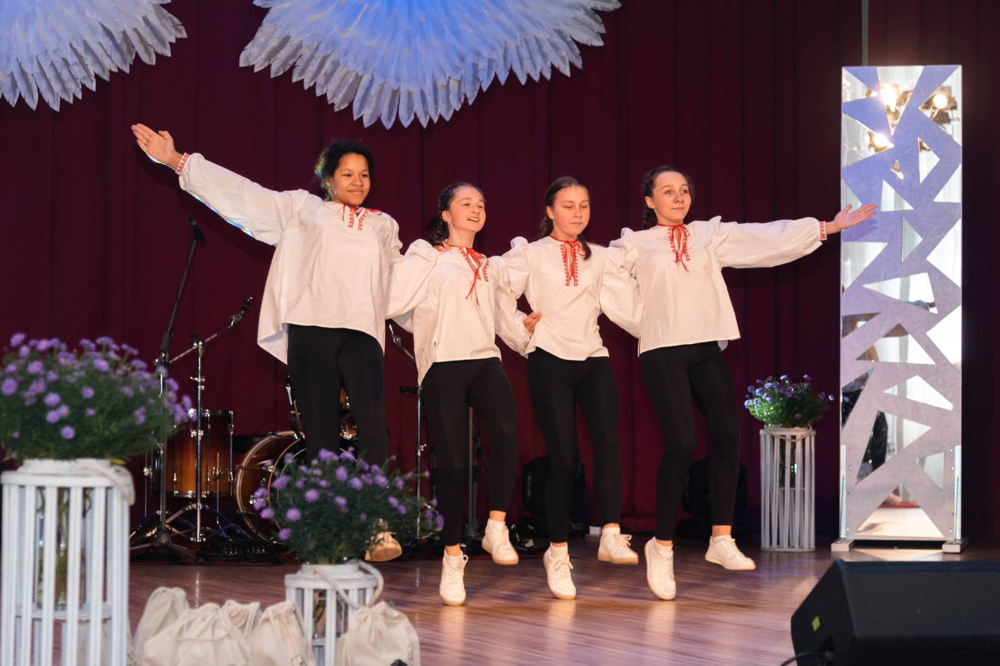
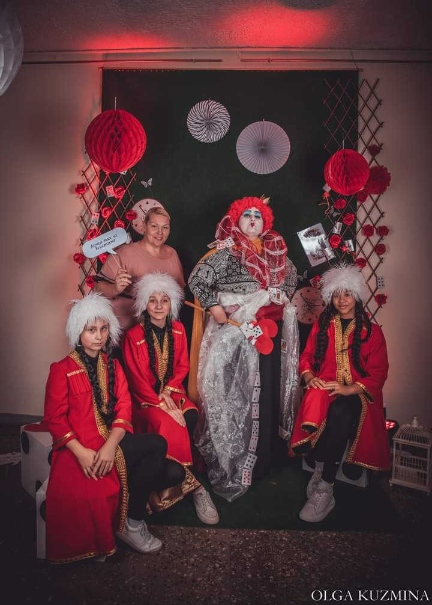
Feimaņu deju un ritma grupa
Sveicināti Feimaņu deju un ritma grupas "Karameles" mājaslapā! Šī vietne sniedz ieskatu kolektīva darbībā, radošajā procesā un skaistākajos uzstāšanās mirkļos.
Šeit iespējams iepazīt grupas dalībnieces, uzzināt vairāk par deju nozīmi viņu dzīvē, kā arī aplūkot fotogaleriju ar spilgtākajiem momentiem no koncertiem un pasākumiem.
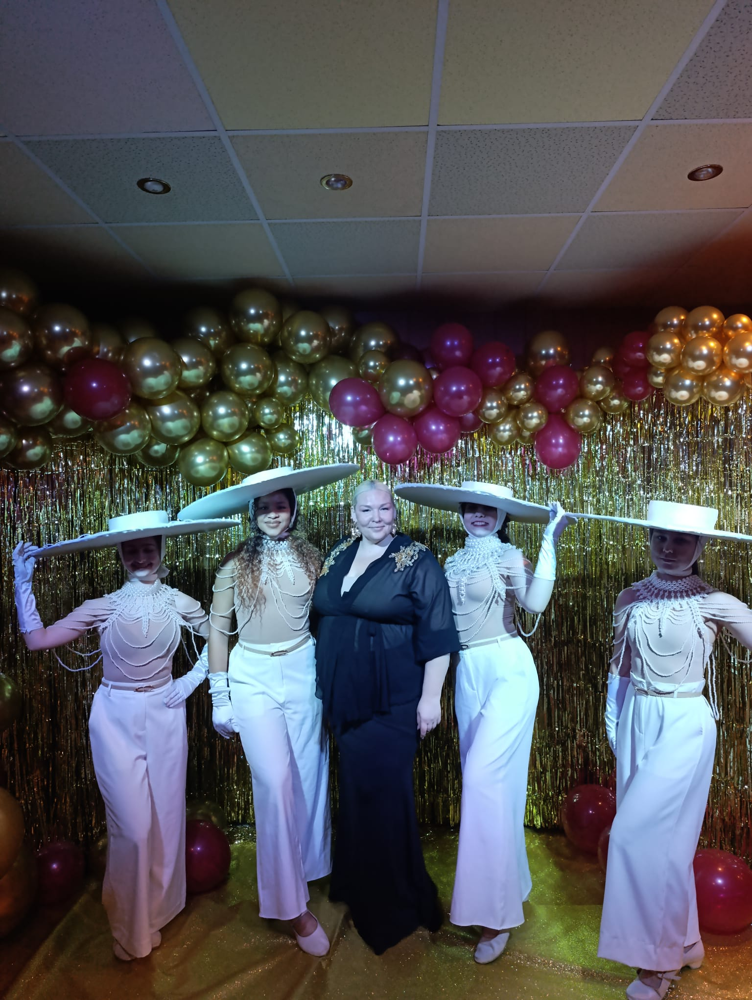
Feimaņu deju un ritma grupa "Karameles" ir radošs, enerģisks un saliedēts kolektīvs, kurā dejo četras talantīgas meitenes – Eva, Gabriella, Evita un Anna. Grupas vadītāja ir Ilga, kuras ieguldījums un aizrautība ir palīdzējusi izveidot šo kolektīvu tādu, kāds tas ir šodien. Pateicoties viņas darbam, šogad grupa svin savu 10 gadu jubileju.
Šo gadu laikā "Karameles" ir kļuvušas par nozīmīgu daļu no Feimaņu kultūras dzīves. Viņas regulāri piedalās dažādos pasākumos, koncertos, svētkos un uzvedumos, kur ar savu enerģiju un pozitīvo noskaņu spēj aizraut skatītājus. Katrs priekšnesums tiek veidots ar lielu rūpību, pievēršot uzmanību gan kustībām, gan kopējam skatuves tēlam.
Grupas repertuārs ir daudzveidīgs – tajā iekļauti dažādi deju stili un ritma elementi, kas padara katru uzstāšanos interesantu un dinamisku. Dejas tiek veidotas tā, lai tās būtu emocionāli bagātas un skatītājiem viegli uztveramas. Katrs priekšnesums ir kā stāsts, kurā tiek izteiktas sajūtas caur kustību.
Liela nozīme grupas attīstībā ir vadītājai Ilgai, kura ar savu pieredzi, pacietību un radošo pieeju palīdz dejotājām pilnveidot prasmes. Viņa iedrošina, motivē un vienmēr atbalsta, radot vidi, kurā iespējams attīstīties un augt.
Mēģinājumi ir svarīga kolektīva daļa – tajos tiek apgūtas jaunas dejas, uzlabota koordinācija, ritma izjūta un skatuves pārliecība. Tie ir arī brīži, kad dalībnieces var sadarboties, mācīties viena no otras un kopīgi pilnveidoties.
Desmit gadu laikā "Karameles" ir uzkrājušas bagātīgu pieredzi, uzstājoties dažādās auditorijās un piedaloties dažādos kultūras notikumos. Šī pieredze ir palīdzējusi attīstīt pārliecību, skatuves prasmes un spēju pielāgoties dažādiem apstākļiem.
Grupas dalībnieces viena otru atbalsta un iedvesmo. Kolektīvā valda draudzīga un pozitīva atmosfēra, kas palīdz sasniegt labus rezultātus un justies labi kopā. Šī savstarpējā sapratne un kopības sajūta ir viens no svarīgākajiem kolektīva spēka avotiem.
"Karameles" izceļas ar savu īpašo stilu, kurā apvienojas ritms, kustība un emocijas. Katrs priekšnesums ir unikāls un rūpīgi izstrādāts, lai tas būtu interesants gan pašām dejotājām, gan skatītājiem.
Deja šajā kolektīvā ir ne tikai kustība, bet arī veids, kā izpaust sevi, attīstīt radošumu un iegūt neaizmirstamu pieredzi. Katrs koncerts, katrs mēģinājums un katrs kopā pavadītais brīdis veido šo kolektīvu īpašu.
"Karameles" ir spilgts piemērs tam, kā ar darbu, neatlaidību un aizrautību iespējams izveidot kolektīvu, kas spēj iedvesmot un priecēt citus ar dejas palīdzību.









